Мамайские прогулки
(23-25 февраля 2007)
... начало здесь ...
Печка в зимовье капризничала по полной программе, ей явно не
хватало Вовы Языка. Пришлось ночевать в прохладе, но это к
лучшему, хватит расслабляться :) |
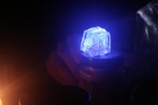
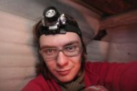
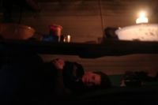
На второй день планировали дотропить и раскатывать склоны
Лесного, однако ребята долго раскачивались и в итоге нашли
удачный камень возле тропы, прыгали с него и катались рядом.
Антон решил осваивать сноуборд, благо пришел в нужных ботинках. |
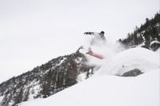
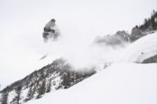
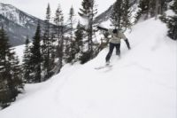
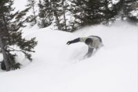
Ну а я скромно добрался в одну каску до вершины Лесного, скатился
вниз по гребню вдоль тропы. Никого нет. Решил подняться еще раз. Ветер
задувал только что оставленные следы и вообще безобразничал. Стоило огромных
усилий перебороть свою лень и второй раз подняться до самого верха. Быть одному
на вершине - это конечно особенный кайф, но все таки скучновато кататься без
компании надежных друзей.
Утро третьего дня, мы спим, снег идет. Накануне договорились с печкой,
а потому тепло и расслабуха стремительно сокращают КПД катания.
На сегодня нам остается только несколько часов бесшабашных прыжков с
трамплина и много-много фотографий. |
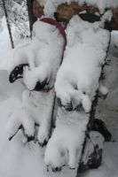
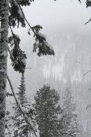
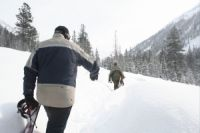
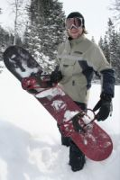
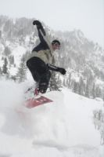
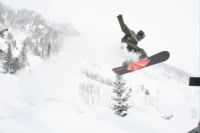
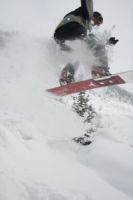
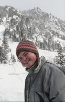
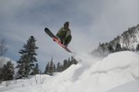
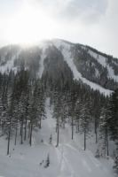
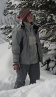
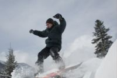
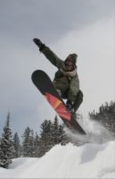
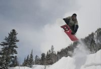
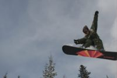
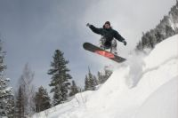
Текст: Алексей Белокрылов
Фото: Антон Климов